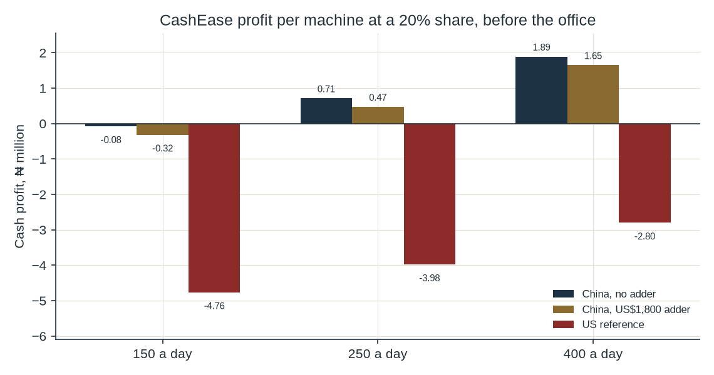
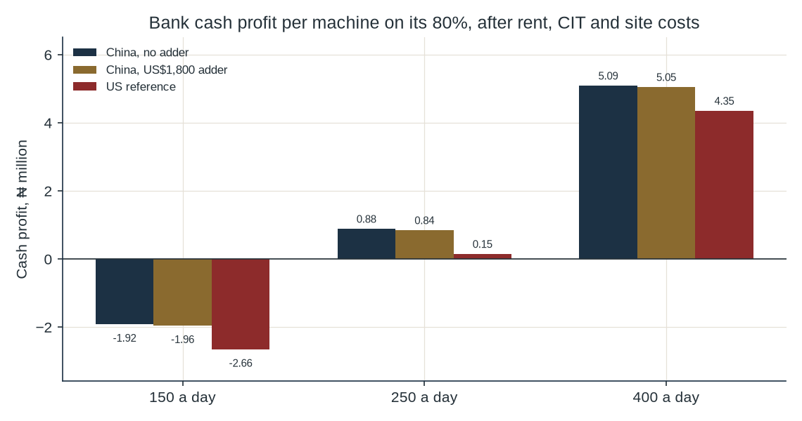

Addendum to the bank-backed machine study
A v4.2 test in which the bank owns the machines and CashEase operates them for 20% of gross fee revenue.
On the cheaper Chinese box, CashEase’s 20% covers servicing and monitoring at 250 and 400 transactions a day, and misses at 150. The ₦25 million office then needs about 38 of those machines at 250 transactions and about 14 at 400. Five machines lose money at every tested volume. The published US machine loses money for CashEase at all three volumes. The bank, keeping 80% and paying for the box, needs about 438 transactions a day on the cheaper box to earn 28%. At 400 it earns 20.9%.
The bank buys the machines, holds the cash and keeps 80% of the gross fee. CashEase runs the machines and keeps 20%. Gross fee is the v4 mix: 55% note-breaking at ₦100, 35% cash-out surcharge at ₦250, and 10% other fees at ₦30. That mix is ₦145.50 a transaction. Assumption Shrink of ₦12.60 a transaction stays with the bank, because the bank owns the notes. It is not deducted before the 20% is calculated. CashEase therefore takes ₦29.10 a transaction. The bank’s fee after shrink is ₦103.80.
Three machine prices are used, and no others. The two Chinese figures are the v4.1 high freight band for the Hongzhou US$4,800 kiosk: ₦16.43 million with no programming adder, and ₦19.13 million with the US$1,800 customization line inside the customs value. Both already include the ₦8 million site-works assumption and one ₦500,000 NIBSS pair. The third figure is the v4 published US reference, ₦65.53 million before duty. A 2014 BusinessDay report put average ATM support at US$2,500 a year.1 That figure is twelve years old, so it is not in the arithmetic.
The bank pays the machine, the float, rent, cash-in-transit, certification and the opportunity cost of the money. The float is the v4 assumption of ₦2.00 million a machine. Rent is ₦150,000 a month. Cash-in-transit is four visits a month at ₦40,000 a visit. Both are v4 assumptions. Certification for the Chinese cases is already inside the landed figures. The US case adds the same ₦500,000 NIBSS pair once, from the May 2024 sandbox note: ₦250,000 for a device and ₦250,000 for an application.2 No CBN approval fee was found. The opportunity rate is the 23% policy rate reset at the 307th Monetary Policy Committee meeting.3,4 The CBN’s own cost-of-funds framework also includes interbank borrowing, deposit-insurance premium and the cost of reserve requirements, and it excludes overhead.5 A weekly deposit-rate table for 18 September 2026 is listed on the CBN site. The PDF returned 403, so no deposit rate from that file is used. Twenty-three percent is the policy rate. It is not a completed cost-of-funds formula.
CashEase pays servicing, software and monitoring, the data link, and its own overhead. Servicing is 10% of the ex-works price a year, the same rule of thumb as v4. On these three boxes that is ₦639,211, ₦878,915 and ₦5.33m. Monitoring is the v4 assumption of ₦400,000 a year. The data link is the v4 assumption of ₦18,000 a month. Overhead is the v4 assumption of ₦25 million a year plus ₦50,000 a machine. The ₦2 million software line inside the machine price stays with the bank, because it is part of the landed cost. It is not charged again as CashEase’s monitoring.
Assignment. Power and on-site security were not named in this brief. They are the v4 assumptions, ₦688,160 and ₦1.44 million a year, and this paper puts them on the bank as site costs. Power uses the retail diesel price of ₦1,810 a litre on 6 October 2026 and the v4 energy assumptions.6 Insurance at 1.5% of the machine plus the float also sits with the bank. A second bank view, further down, drops power and security so the assignment can be seen.
Field staff are not spread across machines. PayScale’s average base salary for a field service engineer in Nigeria is ₦1,085,000, from eight profiles, last updated 8 January 2026. The reported base range is ₦814,000 to ₦3 million.7 The title is not “ATM technician”, and no published count of machines per engineer was found. The model therefore reports how much surplus pays one such salary. It does not invent a crew.
| Machine | 150 | 250 | 400 | Servicing |
|---|---|---|---|---|
| China, no programming adder | -₦76,661 | ₦709,039 | ₦1.89m | ₦639,211 |
| China, US$1,800 adder | -₦316,365 | ₦469,335 | ₦1.65m | ₦878,915 |
| Published US reference | -₦4.76m | -₦3.98m | -₦2.80m | ₦5.33m |

Result On the ₦16.43 million box, one machine at 150 transactions is a loss of ₦76,661 a year. At 250 it is ₦709,039. At 400 it is ₦1.89m. The ₦19.13 million box is a loss of ₦316,365 at 150, then ₦469,335 and ₦1.65m. The US reference is a loss at all three volumes, from ₦4.76m at 150 to ₦2.80m at 400. Its servicing line alone is ₦5.33m, against ₦29.10 a transaction.
At 400 transactions on the cheaper box, the surplus of 0.6 machines pays one engineer at ₦1,085,000. At 250 it takes the surplus of 1.5 machines. At 150 there is no surplus to pay anyone. That is a salary test. It is not evidence that one engineer can cover the sites.
| Fleet | Transactions a day | China, no adder | China, US$1,800 | US reference |
|---|---|---|---|---|
| 5 | 150 | -₦25.63m | -₦26.83m | -₦49.07m |
| 5 | 250 | -₦21.70m | -₦22.90m | -₦45.14m |
| 5 | 400 | -₦15.81m | -₦17.01m | -₦39.25m |
| 20 | 150 | -₦27.53m | -₦32.33m | -₦121.28m |
| 20 | 250 | -₦11.82m | -₦16.61m | -₦105.57m |
| 20 | 400 | ₦11.75m | ₦6.96m | -₦82.00m |
| 50 | 150 | -₦31.33m | -₦43.32m | -₦265.71m |
| 50 | 250 | ₦7.95m | -₦4.03m | -₦226.43m |
| 50 | 400 | ₦66.88m | ₦54.89m | -₦167.50m |
| 200 | 150 | -₦50.33m | -₦98.27m | -₦987.84m |
| 200 | 250 | ₦106.81m | ₦58.87m | -₦830.70m |
| 200 | 400 | ₦342.52m | ₦294.58m | -₦594.99m |
Result On the cheaper box, the office is covered at about 38 machines if each does 250 transactions a day, and at about 14 machines if each does 400. A fleet of 5 loses money at 150, 250 and 400. A fleet of 20 loses money at 150 and at 250, and makes ₦11.75m at 400. A fleet of 50 makes ₦7.95m at 250 and ₦66.88m at 400. At 150 every fleet in the table loses money, and a larger fleet loses more, because each extra machine adds a loss.
The ₦19.13 million box needs about 60 machines at 250 transactions and about 16 at 400. Twenty of those machines at 400 make ₦6.96m. The US reference has no positive per-machine profit at these volumes, so no fleet size covers the office. The v4 year-0 setup assumption of ₦40 million is not in these annual figures. An annual profit still has to recover that cash if it is spent.
The bank’s cash profit is its fee after shrink, minus rent, cash-in-transit, power, security and insurance. The internal rate of return uses that cash profit for seven years. The float goes out at purchase and comes back at year 7. There is no salvage. The 23% opportunity charge is shown beside the return. It is not deducted a second time inside the return. The hurdle used in v4 is 28%, the policy rate plus a 5 percentage-point planning premium.
| Machine | Capital | Cash break-even | Transactions to earn 23% | Transactions to earn 28% | IRR at 400 | Payback at 400 | NPV at 400 |
|---|---|---|---|---|---|---|---|
| China, no programming adder | ₦16.43m | 219 | 411 | 438 | 20.9% | 3.6 years | -₦3.13m |
| China, US$1,800 adder | ₦19.13m | 220 | 442 | 472 | 15.9% | 4.2 years | -₦5.96m |
| Published US reference | ₦65.53m | 245 | 969 | 1,067 | -15.1% | Not within 7 years | -₦54.90m |

Result On the cheaper box the bank’s cash turns positive at 219 transactions a day. Earning the 23% policy rate takes 411. Earning 28% takes 438. At 400 transactions the cash profit is ₦5.09m, payback is 3.6 years, the return is 20.9%, and NPV at 28% is -₦3.13m. A flat 23% charge on the opening machine and float is ₦4.24m a year, which this cash profit covers, with ₦847,656 left. The internal rate of return is still 20.9%, because the flat charge treats the whole outlay as outstanding for all seven years. The return is the figure the bank earns. At 150 the cash result is a loss of ₦1.92m. At 250 it is ₦881,937, and payback is not inside seven years.
The ₦19.13 million box needs 472 transactions a day to earn 28%, and at 400 its return is 15.9%. The US reference needs 1,067 transactions a day. At 400 its cash profit is ₦4.35m and its return is -15.1%. Payback is not inside seven years. A 200-machine fleet of the cheaper box earns about 21.9% at 400 transactions, close to the one-machine rate, because the ₦500,000 certification pair is paid once.
Power and security. Drop those two v4 assumptions and the cheaper box breaks even on cash at 143 transactions a day. At 400 its return becomes 34.8% and NPV at 28% becomes ₦3.12m. The bank verdict in this paper keeps power and security in the cost. Taking them out is what produces a return above 28%.
| CashEase share | CashEase at 150 | CashEase at 400 | Bank IRR at 400 | Bank payback at 400 |
|---|---|---|---|---|
| 15% | -₦371,299 | ₦1.10m | 26.2% | 3.1 years |
| 20% | -₦76,661 | ₦1.89m | 20.9% | 3.6 years |
| 25% | ₦217,976 | ₦2.67m | 15.4% | 4.3 years |
| 30% | ₦512,614 | ₦3.46m | 9.5% | 5.2 years |
Result Raising CashEase from 15% to 30% raises CashEase’s profit and cuts the bank’s return. On the cheaper box, 15% and 20% both miss at 150 transactions. Twenty-five percent produces ₦217,976 before the office, and 30% produces ₦512,614. At 400 transactions the bank’s return runs from 26.2% at a 15% operator share to 9.5% at 30%. None of those four shares earns the bank 28% at 400 transactions. On the US machine, CashEase would need about 38% of gross fee revenue just to cover servicing, monitoring and the link at 400 transactions, before the office.
The monthly fee below is the extra naira, on top of the 20% share, that brings CashEase’s cash to zero at 150 transactions a day. The first column covers one cheaper machine’s own ops. The second also covers that machine’s share of the ₦25 million office. The third adds one field engineer at the PayScale average, spread across the fleet.
| Fleet | Machine only | Machine and office | Machine, office and one engineer |
|---|---|---|---|
| 5 | ₦6,388 | ₦427,222 | ₦445,305 |
| 20 | ₦6,388 | ₦114,722 | ₦119,243 |
| 50 | ₦6,388 | ₦52,222 | ₦54,030 |
| 200 | ₦6,388 | ₦20,972 | ₦21,424 |
Result The machine-only fee is ₦6,388 a month. It does not keep the firm whole. On five machines the fee that also carries the office is ₦427,222 a machine a month. On 20 machines it is ₦114,722. On 50 it is ₦52,222. On 200 it is ₦20,972. One engineer changes those figures by a few thousand naira a machine. The ₦19.13 million box needs ₦26,364 a month before the office. The US box needs ₦397,018 a month before the office.
Twenty percent does not work for both parties on these numbers.
It can work for CashEase on the cheaper Chinese machines once volume is 250 or 400 transactions a day and the fleet is large enough to carry a ₦25 million office: about 38 machines at 250, and about 14 at 400. It does not work at 150 transactions without a fee. It does not work at five machines at any tested volume. It does not work on the published US machine at 150, 250 or 400, because the servicing rule is 10% of a ₦53.27 million ex-works price.
It does not work for the bank at the volumes a 20% operator can live on. The cheaper box pays its cash costs at 219 transactions a day and pays the money back in 3.6 years at 400, but the return is 20.9%. The bank needs about 438 transactions a day to earn 28%. The US box needs about 1,067. A higher share for CashEase makes that bank return worse. Dropping power and security is the change that pushes the cheaper box over 28% at 400 transactions, and those costs are still in the v4 assumptions.
Gross fee = 0.55 × 100 + 0.35 × 250 + 0.10 × 30 = 145.50. Shrink = 0.35 × 12,000 × 0.003 = 12.60.
CashEase naira per transaction at 20% = 0.20 × 145.50 = 29.10. Bank naira after shrink = 0.80 × 145.50 − 12.60 = 103.80.
Effective days = 300 × 0.90 = 270. Annual transactions = daily transactions × 270.
CashEase machine cost = 10% of ex-works + 400,000 + 216,000. Ex-works is US$4,800 × 1,331.69, or US$6,600 × 1,331.69, or US$40,000 × 1,331.69.
Office = 25,000,000 + 50,000 × machines. Break-even fleet = 25,000,000 / (machine profit − 50,000), when machine profit exceeds 50,000.
Bank cash cost = rent 1,800,000 + cash-in-transit 1,920,000 + power 688,160 + security 1,440,000 + 1.5% of (machine + 2,000,000).
Opening cash = machine + float, with the ₦500,000 NIBSS pair counted once on a fleet. Years 1 to 6 are the bank’s cash profit. Year 7 adds the float back. No debt and no salvage. The 23% line is opening cash × 0.23. It is not inside the return.
The monthly fee is the annual gap divided by 12. Recompute from model/operator_scenario.py.
End of addendum. The v4 study and the China-kiosk addendum are unchanged.